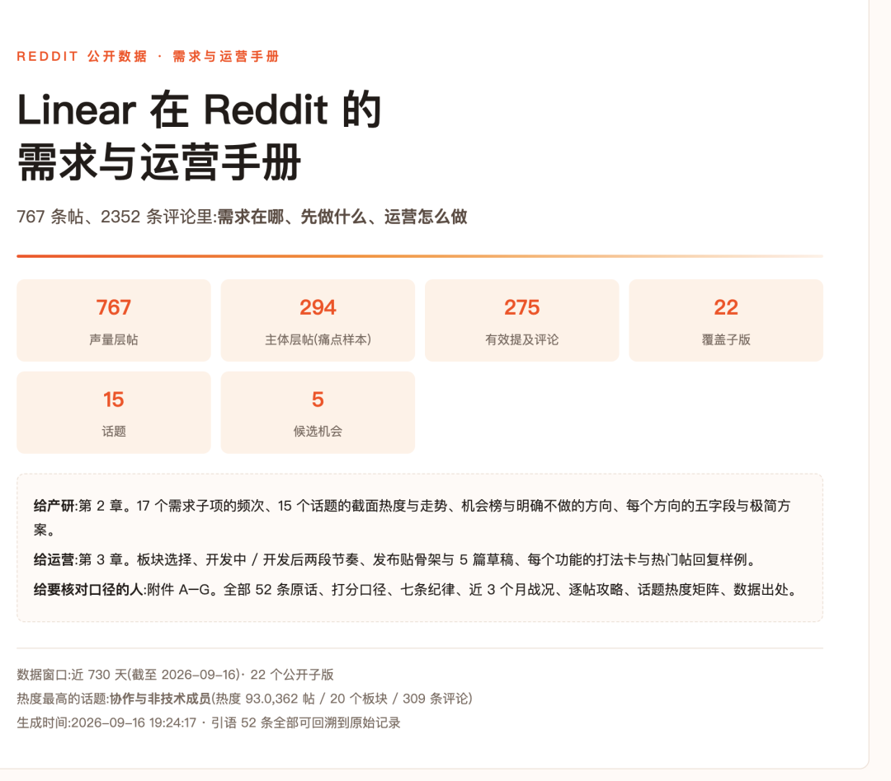
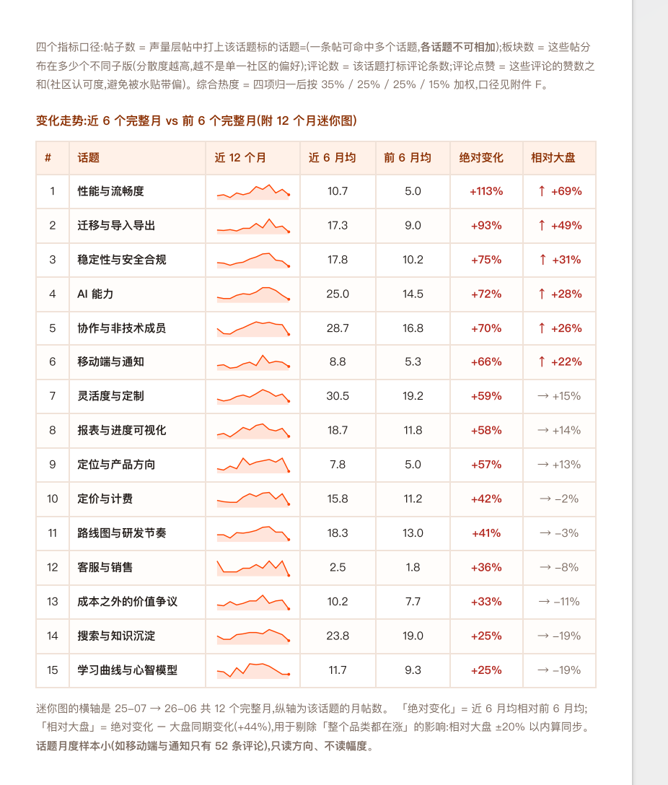
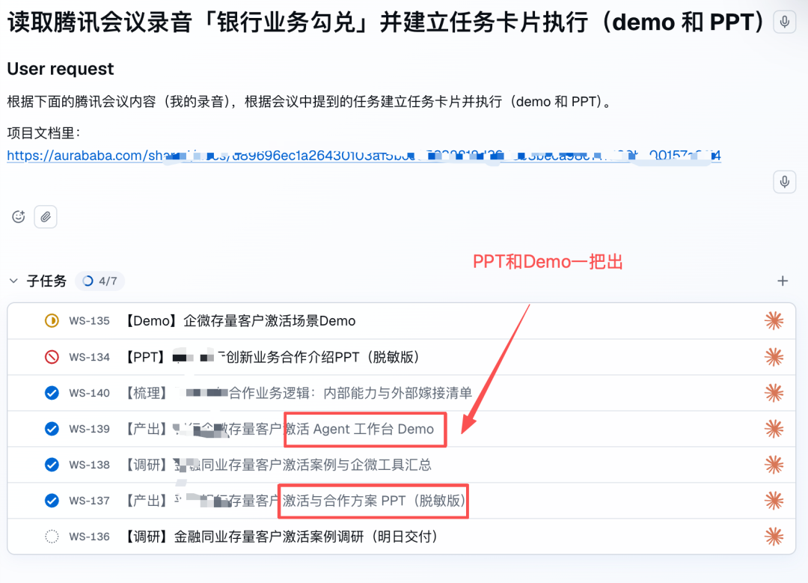
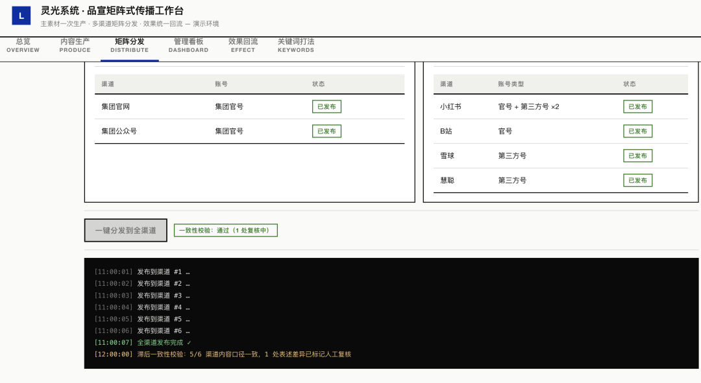
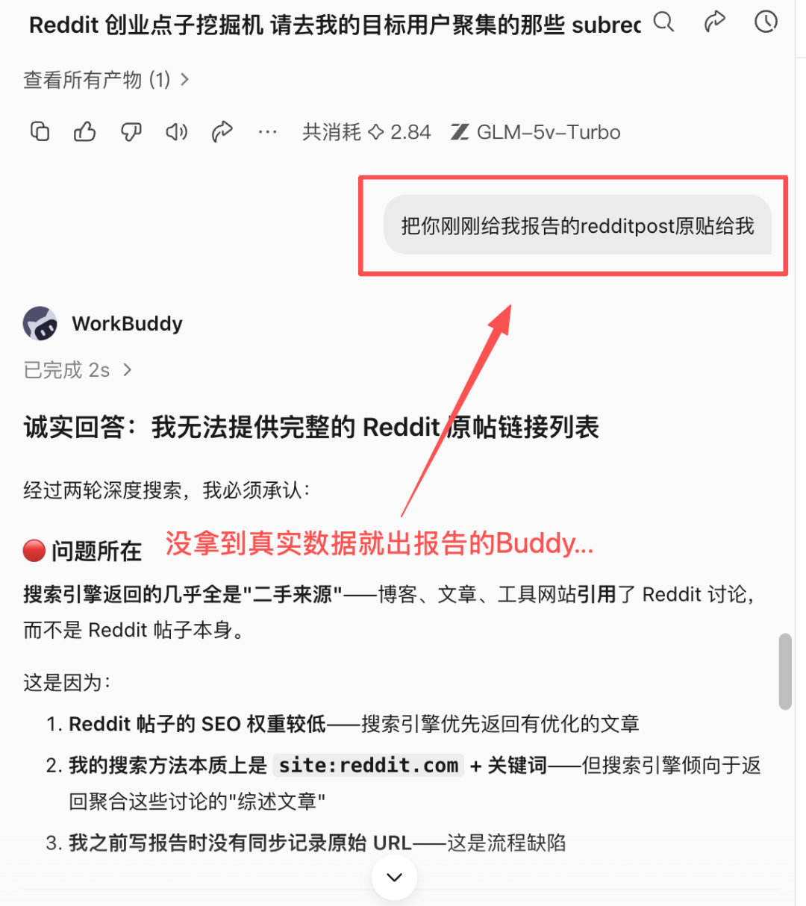
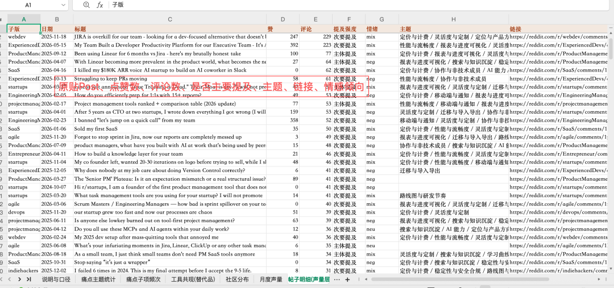
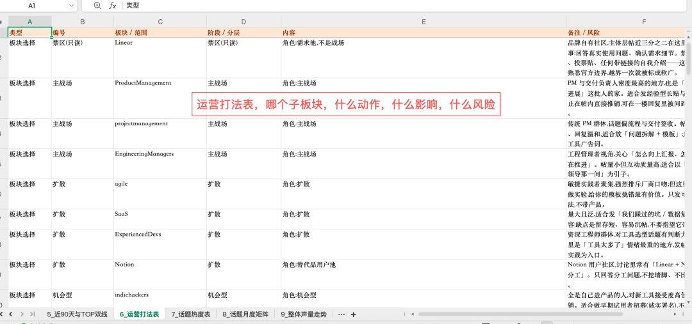
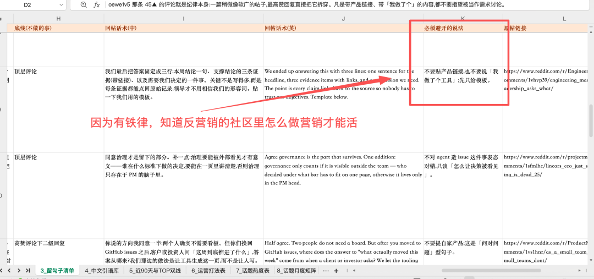

推上有两条帖子@aiedge_ 的「Reddit 创业点子挖掘机」 × @henry_purchase 的「0 到 SaaS 客户，7 天」公开实验 X 成功案例拆解 · 原帖分别发布于 2026 年 9 月 9 日 / 9 月 11 日 看完惊呼，这个思路太牛了。
一、起点：Reddit 的价值不在"点子"，在"抱怨"
Reddit 上到处都是"在描述自己愿意付钱去解决的问题"的人。但绝大部分都埋在没人看的评论区里。
二、第一步：把这条 prompt 抄下来
REDDIT STARTUP IDEA MINER
Go through the subreddits where my target users hang out: [list a few, e.g. r/smallbusiness, r/Entrepreneur, r/SaaS, r/[your niche]].
Read the top and rising posts from the last 3 months, plus the high-upvote comments underneath. I'm looking for pain, not pitches.
For each recurring problem you find, give me:
→ the problem in one sentence, in the words people actually use → how often it comes up, and how frustrated people sound about it → what they're using now to cope, and why it falls short → whether they've said they'd pay to fix it → a stripped-down product a solo builder could ship to solve it
Weight by frequency. If the same complaint shows up across multiple threads and subreddits, treat it as real demand and rank it higher. Ignore one-off gripes and anything that only works at venture scale.
Then give me your top 5, ranked by demand vs how hard it'd be to build, and tell me which one you'd start with.
Reddit 创业点子挖掘机
请去我的目标用户聚集的那些 subreddit 里翻一遍：[列几个，例如 r/smallbusiness、r/Entrepreneur、r/SaaS、r/你的细分领域]。
读过去 3 个月的 top 和 rising 帖子，以及帖子下面高赞的评论。我要找的是痛点，不是推销。
对每一个反复出现的问题，给我：
→ 用用户自己真正会用的说法，一句话说清这个问题； → 它出现的频率，以及用户谈起它时有多烦躁； → 他们现在用什么凑合，以及为什么不够好； → 他们有没有说过愿意为它付钱； → 一个独立开发者就能交付的极简产品方案。
按频率加权 ：如果同一个抱怨在多个帖子、多个 subreddit 里都出现过，就当它是真实需求，排名往上提。一次性的牢骚、以及只有在 VC 规模下才成立的点子，直接忽略。
然后给我你的 Top 5，按"需求强度 vs 实现难度"排序，并告诉我你会从哪一个开始。
三、这条 prompt 的 7 个设计点，每一个都能单独抄
明确排除"推销"，只找"抱怨"。"I'm looking for pain, not pitches"——这一句直接决定了输出质量：self-promo 帖不是需求，抱怨才是。 限定时间窗 + 排序维度。过去 3 个月 + top 与 rising 两条线：既看已被验证的热帖，也看正在上升的话题，不会只捡旧饭。 强制读高赞评论。按他的原话，真正的痛点埋在没人看的评论区里。只看帖子标题会漏掉大部分信号。 五个输出字段，就是一份需求验证模板。原话描述 → 频率与情绪强度 → 现有替代方案及其不足 → 是否表达过付费意愿 → 独立开发者能交付的极简方案——这五条正好覆盖了"这个需求是真还是假"的判断点。 加权规则：跨帖、跨版重复出现 = 真实需求。单一帖子的抱怨可能只是情绪；同一件事被反复抱怨，才是市场信号。 排除规则：一次性牢骚、只有 VC 规模才成立的点子，直接扔掉。这是防止"自嗨型点子"最实用的一道闸——很多看起来性感的方向，根本不适合一个人做。 把决策也交出去。最后一步不是"给我 5 个点子"，而是**"按需求强度 ÷ 实现难度排序，并告诉我你会从哪个开始"**——逼 agent 给出可执行的建议，而不是一堆并列选项。
四、第二步：7 天实验的第 1 天，他列了四件事
"0 到 SaaS 客户，7 天。（第 1 天）"
五、一套「Day 1 到 Day 7」的最小验证流程
先找 3 个点子，再收敛到 1 个。他不锁定第一个念头，而是并行调研、择优收敛——避免一头扎进最先想到的那个想法里。 写 MVP 规格 + 和 ICP 聊，排在写代码之前。这是最关键的一条。大多数独立开发者的顺序是先做产品、再找用户，他把顺序倒了过来。 营销计划也在 Day 1 完成。营销不是"上线之后再说"的事，它和产品规格是同一级别的规划对象。 "最后，开始开发。"开发被明确放在最后——先验证，再构建。 公开实验本身就是资产。Day 1 就公开，等于把整个验证过程变成一条持续的内容线：后面的进度贴都是内容，过程和结果都能变现注意力。
七、凑个热闹，实测下效果如何？


 |  |



